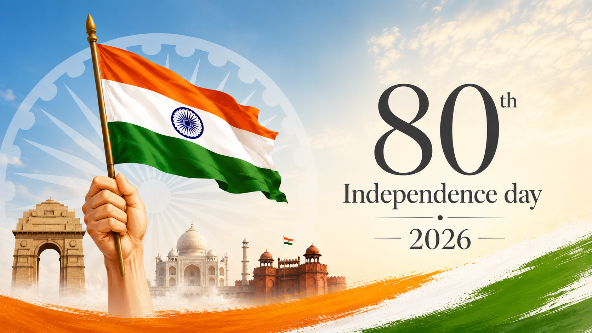

The Independence Day of India, which is celebrated religiously
throughout the Country on the 15th of August every year, holds
tremendous ground in the list of national days, since it reminds every
Indian about the dawn of a new beginning, the beginning of an era,
of deliverance from the clutches of British colonialism
of more than 200 years. It was on 15th August 1947 that India was declared
,independent from British colonialism, and the reins of control
were handed over to the leaders of the Country. India's gaining
of independence was a tryst with destiny, as the struggle for
freedom was a long and tiresome one, witnessing the sacrifices of
many freedom fighters, who laid down their lives on the line.
India will celebrate its 80th Independence Day on 15 August 2026.
This year's theme revolves around a Developed India focusing on Indigenous
Technologies (6G trials, Semiconductor Mission & AI), Green Transition
( Mission LiFE, Solar Powered Villages, Green Hydrogen Mission) & Atmanirbhar
Defence- for the first time all the equipments used in the Red Fort shall be
Indigenously built in India.
80th Independence Day of India (marking 79 years of completed freedom)
Date: Saturday, August 15, 2026Day: Saturday
Main Venue: Red Fort, New Delhi
Time: Morning (ceremony typically commences around 7:00 AM – 7:30 AM IST)
Key Ceremony: National flag hoisting and address to the nation by the
Prime Minister of India
